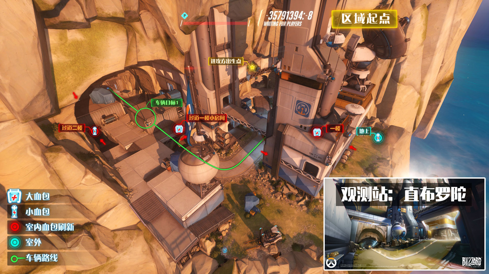

在2015年美国波士顿PAX East游戏展上，《守望先锋》的创意总监Jeff Kaplan公布的一张全新地图“监测站：直布罗陀”。并且在2015暴雪嘉年华“守望先锋”世界座谈会中，几位设计师为我们揭示了这张地图的历史，“观察站：直布罗陀，原先是守望先锋建在崖壁中的一个基地，现在是温斯顿的据点。”
“监测点：直布罗陀”是一张“运载目标”模式的地图，位于地中海上游被抛弃的一处守望先锋哨站。在这张地图中，一支队伍需要保护正在向外发射的通讯无人机，而另一支队伍则需要阻止其发射。并且在PAX East上，Jeff Kaplan透露此张新地图，Chris会让玩家玩家亲身体会游戏内历史的典例。
地图渊源：直布罗陀(英语：Gibraltar)是英国海外领土之一，位于伊比利亚半岛的末端，是通往地中海的入口。直布罗陀面积为6平方千米，北接西班牙安达鲁西亚加的斯省。直布罗陀巨岩是直布罗陀主要的地标之一。直布罗陀的人口集中在该区域的南部，容纳了直布罗陀人和其他民族共三万多人。
进攻方在比赛时间内需要不停的将车从出生点门口依次推到A点B点C点，其中C点即为终点。如果进攻方成功的将车推到C点则表示进攻方胜利，反之则防守方胜利。进攻方将车每推到一个点，比赛时间即重新刷新一次。进攻方推车的速度可以有加成，比如3个英雄同时推车比1个英雄快很多。防守方可以反推车，但是速度较慢，而且没有速度加成。另外需要注意的是，当车旁边同时有进攻方与防守方英雄的时候，车将静止不动。有时利用这点，到了进攻方马上要胜利的时候，如果防守方改变整容，选择肉盾型稍多的阵容，在C点处打阵地战，可以通过时间的消耗，得到最终比赛的胜利。比赛允许的话，想象下，防守方6个莱因哈特(大锤)交替着拿盾牌形成“铁桶阵”站在车前防守，进攻方心理必然各种酸爽，就是推不进去!
1.车可以作为移动的屏障,进攻方可以利用车子抵挡防守方的攻击。
2.在游戏时间结束之后,如果进攻方有一人或一人以上在车子周围,都会进入加时环节,此加时环节一直会到车子周围没有任何进攻方人员5秒之后结束(进攻方失败)或者车子到达终点(进攻方胜利)。
3.切记:推车图进攻方的主要目标是推车,所以活动范围最好在车子附近,不要因为想杀人离车太远导致游戏失败。
进攻方从山洞出来后，可以选择三条路线。线路1绕到上图左侧的建筑上方，容易被防守方集火，最好有线路2处的肉盾型英雄掩护配合。线路2就是沿着推车的方向前进，推荐肉盾型英雄推车。线路3就是开场绕到地图下方的平台上面，可以消灭防守方在此处的防守势力，也可以掩护线路2推车的队友。